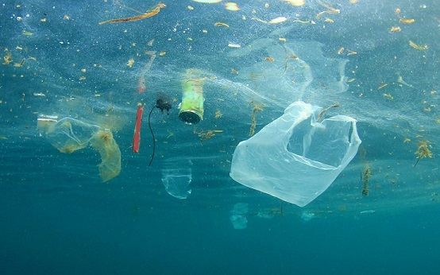

Environment Facts
The Environment facts are that
- 80% of marine pollution comes from land-based sources.
- In many developing countries 90% of waste water and 70% of industrial waste is discharged without treatment.
- 6.5 million tons of litter enter the worlds Ocean each year. 50% is long-lasting plastic that will drift for hundreds of years before it is degraded.
- More than 100,000 chemicals are produced commercially. They represent a threat for oceans through accidents or transport. They can also be emitted in the atmosphere, the soil or the water and reach the oceans
